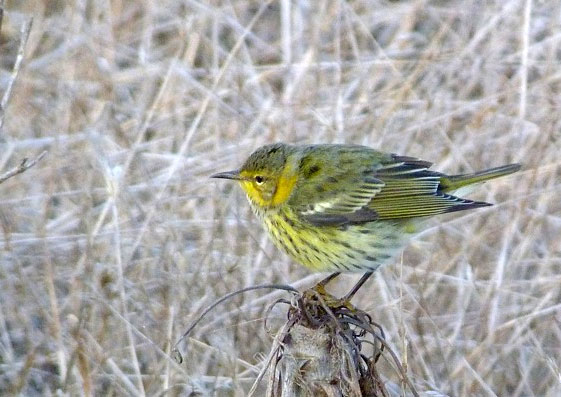

| These photographs accompany records that have been recently submitted to the committee. This record
is UNDER REVIEW.  Cape May Warbler Setophaga tigrina 22 Octoberl 2011, Santa Barbara Island., SBA 2011-156 © 2011 Peter A. Gaede Back to CBRC Rare Bird Photos |